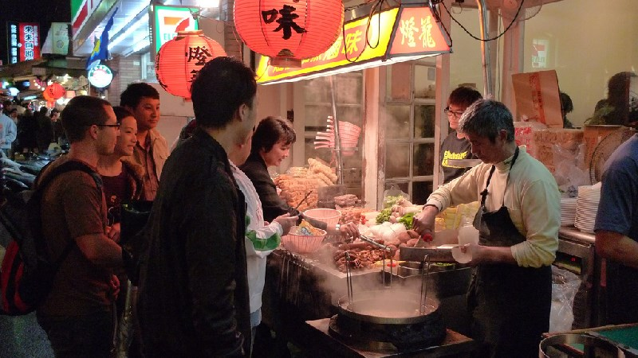
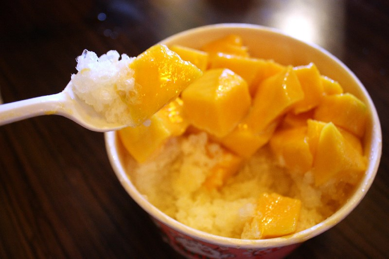

Street Food in Taiwan
I have been to Taiwan once. But I enjoyed it immensely. I got to meet my relatives, and the best thing was the food. Food you could not get in Michigan. It was almost like heaven.
Taiwan has a lot of street food, or small eats, “xiaochi”, which are relatively cheap. Tiny food carts can be found everywhere on the streets, the wonderful aroma wafting over, tempting you. It's not over yet. The main places for getting food are the night markets.
Taiwan Street Food by David is licensed under CC BY-NC-SA 2.0
Night markets are big, crowded, and noisy but the food is like a comforting blanket, enveloping you in warmth.

Xiao long bao are dumplings filled with hot soup, and are very popular.
Xiao Long Bao Dumplings - Camy, Melbourne by Alpha is licensed under CC BY-SA 2.0
Recently, it has been popular for tourists as well, as it is a good place to eat some of Taiwan's ethnic foods. Popular staples of night markets include stinky tofu, oyster omelet, shaved ice, iron eggs, hujiao bing, beef noodle soup, scallion pancakes, and of course more.
 Shaved ice may look like a snow cone, but the ice is finer and shaved in layers.
Mango Shaved Ice by Jocelyn & Cathy . is licensed under CC BY-NC-ND 2.0
The sights in Taiwan were amazing, but it was definitely the food that made my vacation special.